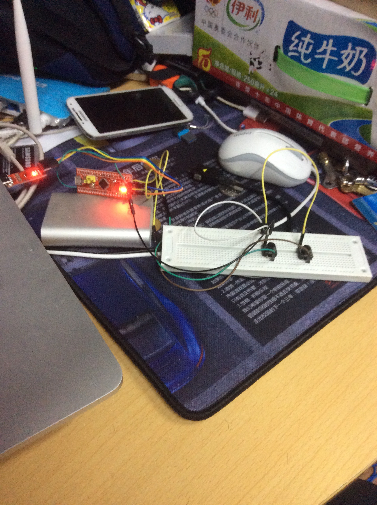
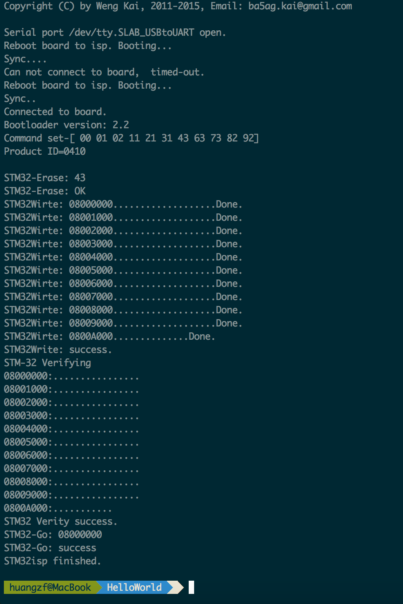
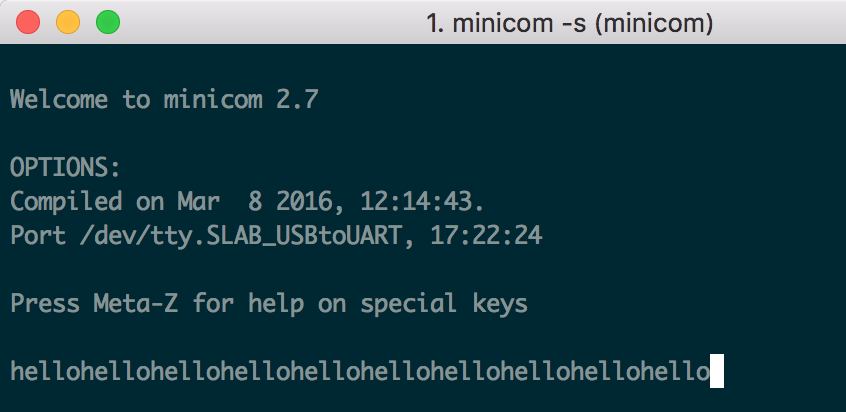
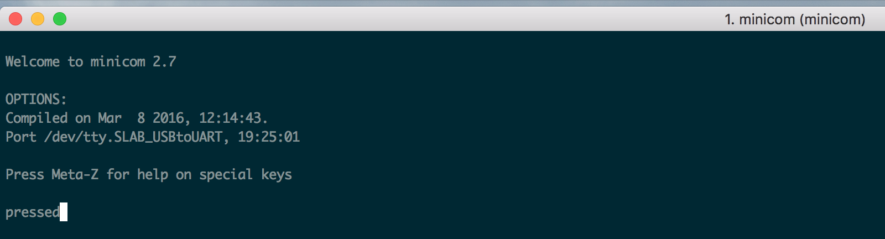
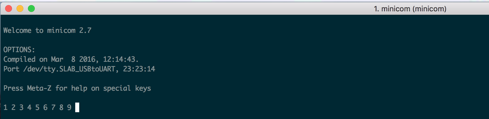
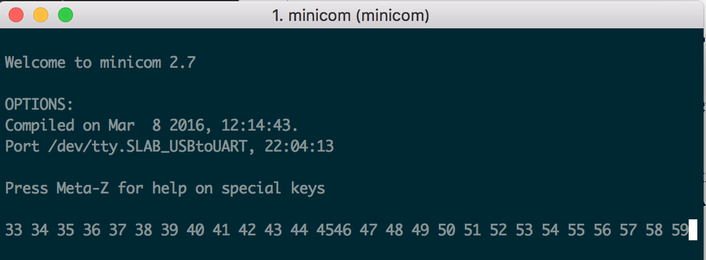
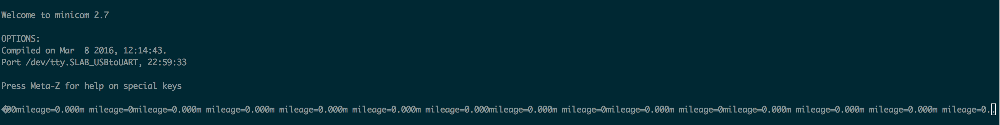
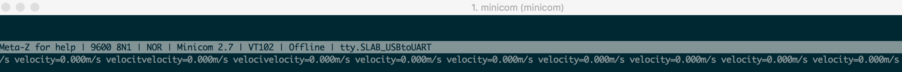
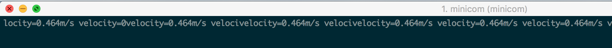
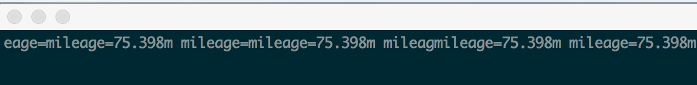

实验过程连线图：

程序主要框架在附件中，包括makefile。
定义初始化uart函数MX_USART1_UART_Init:
/* USART1 init function */
void MX_USART1_UART_Init(void)
{
huart1.Instance = USART1;
huart1.Init.BaudRate = 9600;
huart1.Init.WordLength = UART_WORDLENGTH_8B;
huart1.Init.StopBits = UART_STOPBITS_1;
huart1.Init.Parity = UART_PARITY_NONE;
huart1.Init.Mode = UART_MODE_TX_RX;
huart1.Init.HwFlowCtl = UART_HWCONTROL_NONE;
huart1.Init.OverSampling = UART_OVERSAMPLING_16;
HAL_UART_Init(&huart1);//初始化UART
}其中huart1是UART_HandleTypeDef类型的全局变量。以下为main函数的编写，其中在主循环中调用了HAL_UART_Transmit函数发送"hello"字符串内容。
int main(void)
{
HAL_Init();
/* Configure the system clock */
SystemClock_Config();
/* Initialize all configured peripherals */
MX_GPIO_Init();
MX_USART1_UART_Init();
unsigned char *p="hello";
while (1)
{
HAL_UART_Transmit(&huart1, p, 7, 1);
HAL_Delay(1000);
}
/* USER CODE END 3 */
}在Src目录下的stm32f1xx_hal_msp.c文件中，在HAL_UART_MspInit函数中激活GPIO和UART的时钟，配置GPIO的引脚，PA9作为TX，PA10作为RX。
void HAL_UART_MspInit(UART_HandleTypeDef* huart)
{
GPIO_InitTypeDef GPIO_InitStruct;
if(huart->Instance==USART1)
{
/* Peripheral clock enable */
__HAL_RCC_GPIOA_CLK_ENABLE();
__HAL_RCC_USART1_CLK_ENABLE();
GPIO_InitStruct.Pin = GPIO_PIN_9;
GPIO_InitStruct.Mode = GPIO_MODE_AF_PP;
GPIO_InitStruct.Speed = GPIO_SPEED_HIGH;
HAL_GPIO_Init(GPIOA, &GPIO_InitStruct);
GPIO_InitStruct.Pin = GPIO_PIN_10;
GPIO_InitStruct.Mode = GPIO_MODE_INPUT;
GPIO_InitStruct.Pull = GPIO_NOPULL;
HAL_GPIO_Init(GPIOA, &GPIO_InitStruct);
}
}然后使用附件中的makefile，执行make命令，生成blink.hex文件。接下来我们利用配置好的Mac下的stm32isp工具，将hex文件烧录进stm32板上。执行stm32isp命令:
stm32isp blink.hex /dev/tty.SLAB_USBtoUART 115200其中/dev/tty.SLAB_USBtoUART是stm32 USB挂载位置，可用ls /dev/tty.*命令查看。烧录结果如下：

看到上述输出表示成功，注意在Sync.第一次出现时要及时按下stm32板上的reset键。
要查看串口输出的信息，使用minicom工具，我们用minicom -s进入设置模式，在Serial port setup中将串口挂载目录设置为/dev/tty.SLAB_USBtoUART，波特率设为9600。然后保存，进入minicom可观察到如下信息，即每隔一秒输出一次hello。

连接图见报告的第一张图，配置PA11和PA12的方式为：在HAL_UART_MspInit中设置PA11和PA12。
文件stm32f1xx_hal_msp.c:
void HAL_UART_MspInit(UART_HandleTypeDef* huart)
{
GPIO_InitTypeDef GPIO_InitStruct;
GPIO_InitStruct.Pin = GPIO_PIN_11;
GPIO_InitStruct.Mode = GPIO_MODE_INPUT;
GPIO_InitStruct.Pull = GPIO_PULLUP;
GPIO_InitStruct.Speed = GPIO_SPEED_LOW;
HAL_GPIO_Init(GPIOA, &GPIO_InitStruct);
GPIO_InitStruct.Pin = GPIO_PIN_12;
GPIO_InitStruct.Mode = GPIO_MODE_IT_FALLING;
GPIO_InitStruct.Pull = GPIO_PULLUP;
GPIO_InitStruct.Speed = GPIO_SPEED_LOW;
HAL_GPIO_Init(GPIOA, &GPIO_InitStruct);
}文件main.c中，
设置标识变量flag，表示按键当前被按下还是被松开，以实现上升沿触发。
unsigned char *p="pressed";
int tag = 0;
while (1)
{
if (HAL_GPIO_ReadPin(GPIOA, GPIO_PIN_11) == RESET && tag == 0) {
HAL_Delay(10);
if (HAL_GPIO_ReadPin(GPIOA, GPIO_PIN_11) == RESET)
{
HAL_UART_Transmit(&huart1, p, 7, 1);
tag = 1;
}
}
if (HAL_GPIO_ReadPin(GPIOA, GPIO_PIN_11) == SET) {
tag = 0;
}
}执行make命令编译，以及stm32isp烧录命令，然后minicom查看串口输出结果如下。当按下PA11时，串口输出且仅输出一个pressed，这说明去抖动和按键标识变量都起到了应有的作用。

在文件stm32f1xx_hal_msp.c中HAL_UART_MspInit函数，配置PA12下降沿触发中断，设置中断优先级，enable中断向量表处理:
GPIO_InitStruct.Pin = GPIO_PIN_12;
GPIO_InitStruct.Mode = GPIO_MODE_IT_FALLING;
GPIO_InitStruct.Pull = GPIO_PULLUP;
GPIO_InitStruct.Speed = GPIO_SPEED_LOW;
HAL_GPIO_Init(GPIOA, &GPIO_InitStruct);
/* USER CODE END USART1_MspInit 1 */
HAL_NVIC_SetPriority(EXTI15_10_IRQn,0,0);
HAL_NVIC_EnableIRQ(EXTI15_10_IRQn); 文件stm32f1xx_it.c中添加EXTI15_10_IRQHandler函数，并重写HAL_GPIO_EXTI_Callback函数，内部实现count加一和flag置位:
void HAL_GPIO_EXTI_Callback(uint16_t GPIO_Pin)
{
extern int count;
extern int flag;
count++;
flag = 1;
}
void EXTI15_10_IRQHandler()
{
HAL_GPIO_EXTI_IRQHandler(GPIO_PIN_12);
}main.c中定义全局变量count和flag，主循环中：
while (1)
{
//HAL_UART_Transmit(&huart1, "pressed", 7, 1);
if (flag == 1)
{
flag = 0;
char s[10];
sprintf(s, "%d ", count);
HAL_UART_Transmit(&huart1, (unsigned char *)s, strlen(s), 1);
}
}结果如下：

main.c中，添入HAL_TIM_PeriodElapsedCallback函数：
TIM_HandleTypeDef TIM_Handle;
int count = 0;
int flag = 0;
void HAL_TIM_PeriodElapsedCallback(TIM_HandleTypeDef *htim)
{
if (htim->Instance == TIM3)
{
flag = 1;
count++;
}
}
int main(void)
{
HAL_Init();
/* Configure the system clock */
SystemClock_Config();
/* Initialize all configured peripherals */
MX_GPIO_Init();
MX_USART1_UART_Init();
MX_TIM3_Init();
/* USER CODE BEGIN 2 */
HAL_TIM_Base_Start_IT(&TIM_Handle);
/* USER CODE END 2 */
while (1)
{
//HAL_UART_Transmit(&huart1, "pressed", 7, 1);
if (flag == 1)
{
flag = 0;
char s[10];
sprintf(s, "%d ", count);
HAL_UART_Transmit(&huart1, (unsigned char *)s, strlen(s), 1);
}
}
/* USER CODE END 3 */
}函数MX_TIM3_Init:
void MX_TIM3_Init(void)
{
TIM_ClockConfigTypeDef sClockSourceConfig;
TIM_MasterConfigTypeDef sMasterConfig;
TIM_Handle.Instance = TIM3;
TIM_Handle.Init.Prescaler = 8000;
TIM_Handle.Init.CounterMode = TIM_COUNTERMODE_UP;
TIM_Handle.Init.Period = 199;
TIM_Handle.Init.ClockDivision = TIM_CLOCKDIVISION_DIV1;
HAL_TIM_Base_Init(&TIM_Handle);
sClockSourceConfig.ClockSource = TIM_CLOCKSOURCE_INTERNAL;
HAL_TIM_ConfigClockSource(&TIM_Handle, &sClockSourceConfig);
sMasterConfig.MasterOutputTrigger = TIM_TRGO_RESET;
sMasterConfig.MasterSlaveMode = TIM_MASTERSLAVEMODE_DISABLE;
HAL_TIMEx_MasterConfigSynchronization(&TIM_Handle, &sMasterConfig);
}文件stm32f1xx_hal_msp.c添入两个函数:
void HAL_TIM_Base_MspInit(TIM_HandleTypeDef *htim)
{
if (htim->Instance == TIM3)
{
__TIM3_CLK_ENABLE();
HAL_NVIC_SetPriority(TIM3_IRQn, 0, 0);
HAL_NVIC_EnableIRQ(TIM3_IRQn);
}
}
void HAL_TIM_Base_MspDeInit(TIM_HandleTypeDef *htim)
{
if (htim->Instance == TIM3)
{
__TIM3_CLK_DISABLE();
HAL_NVIC_DisableIRQ(TIM3_IRQn);
}
}文件stm32f1xx_it.c中添入一个函数TIM3_IRQHandler:
void TIM3_IRQHandler()
{
HAL_TIM_IRQHandler(&TIM_Handle);
}于是完成了和上一个步骤同样的功能，每200ms触发一次中断，count加一，flag置位。结果如下：

首先在main.c文件中，定义车轮半径为0.8m，同时定义几个标识变量代表模式、时间、速度、里程等。
int count = 0;//车轮转的圈数
int flag_timer = 0;//for timer
int flag_btn = 0;//for PA12
int mode = 0;//切换模式
float mileage = 0;//里程
float velocity;//速度
float ttime = 0;//总时间
const float RADIUS = 0.8;按钮11，12分别用part2和part3里面的方式做触发，定时器也是用上面的方式做触发。PA12和timer的callback函数定义如下：
//Press PA12
void HAL_GPIO_EXTI_Callback(uint16_t GPIO_Pin)
{
flag_btn = 1;
}
//Timer
void HAL_TIM_PeriodElapsedCallback(TIM_HandleTypeDef *htim)
{
if (htim->Instance == TIM3)
{
flag_timer = 1;
}
}main函数中的while循环代码：
while (1)
{
//处理PA11
if (HAL_GPIO_ReadPin(GPIOA, GPIO_PIN_11) == RESET && tag == 0) {
HAL_Delay(10);
if (HAL_GPIO_ReadPin(GPIOA, GPIO_PIN_11) == RESET)
{
mode = 1 - mode;//切换模式
tag = 1;
}
}
if (HAL_GPIO_ReadPin(GPIOA, GPIO_PIN_11) == SET) {
tag = 0;
}
//根据模式选择输出内容
if (mode == 0)
{
char s[50];
sprintf(s, "mileage=%.3fm ", mileage);//输出里程
HAL_UART_Transmit(&huart1, (unsigned char *)s, strlen(s), 1);
}
else
{
char s[50];
sprintf(s, "velocity=%.3fm/s ", mileage / ttime);//输出速度
HAL_UART_Transmit(&huart1, (unsigned char *)s, strlen(s), 1);
}
//Press PA12
if (flag_btn == 1)
{
flag_btn = 0;
count++;//车轮圈数加1
mileage += PI * RADIUS * 2;//里程加一圈的长度
}
if (flag_timer == 1)
{
flag_timer = 0;
ttime += 0.2;//计时器计数
}
}得到输出结果如下：
一开始里程为0

按下PA11切换模式，输出速度为0

按下PA12后，车轮圈数增加，发现输出速度改变

多次按下PA12增加里程，然后切换模式回到模式0，看里程数

由此可见自行车码表的计数功能已经实现。